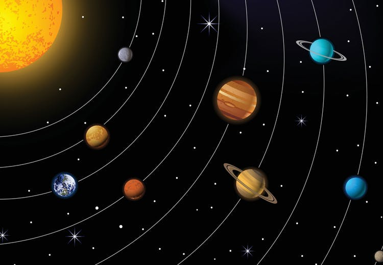

Solsystemet er det planetsystemet som består av blant annet solen, jorden og månen. Det består av solen og de himmellegemer som den binder til seg gjennom gravitasjon, og har sin opprinnelse i en gravitasjonskollaps av en gigantisk gass- og støvsky for 4,6 milliarder år siden.Rundt solen kretser en rekke elementer i en nærmest flat skive i ekliptikken. Utenfor solen finnes det meste av solsystemets masse i de åtte planetene, som har tilnærmet sirkulære omløpsbaner. De fire indre planetene Merkur, Venus, jorden og Mars består i stor grad av stein og metall og kalles steinplanetene. De fire ytre planetene Jupiter, Saturn, Uranus og Neptun består i stor grad av hydrogen og helium. De kalles ofte gasskjempene, da de er mye tyngre og større enn steinplanetene.
Kilde: Wikipedia
Klikk her for å se alle planetene i vårt solsystem
Klikk her for å lese mer om sola vår